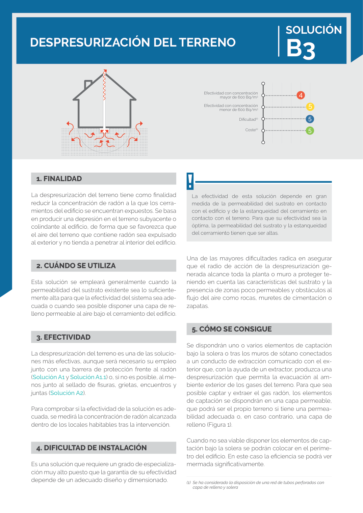

GUIA · B3 · versión sin-fecha · capa guia
Formatos: JSON compacto · Markdown · PDF fuente
Ámbito del documento · texto del ámbito · documento y tablas
Tipo: tablas, figuras · nivel 3 · sección estimada: Solucion B3 - Despresurizacion del terreno · padre: a0179
B3 La efectividad de esta solución depende en gran medida de la permeabilidad del sustrato en contacto con el edificio y de la estanqueidad del cerramiento en contacto con el terreno. Para que su efectividad sea la óptima, la permeabilidad del sustrato y la estanqueidad del cerramiento tienen que ser altas. Una de las mayores dificultades radica en asegurar que el radio de acción de la despresurización ge nerada alcance toda la planta o muro a proteger te niendo en cuenta las características del sustrato y la presencia de zonas poco permeables y obstáculos al flujo del aire como rocas, muretes de cimentación o zapatas.

PDF fuente redistribuible: copia fiel enlazada en esta página (SHA256 verificado).